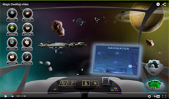

Мэджик Десктоп — это компьютерная программа, которая сама обучает Вашего ребенка с помощью интерактивных игр.
Занимаясь в Мэджик Десктоп Ваш ребенок разовьёт:
- Внимание и восприятие окружающего мира
- Способность к анализу определению свойств и характеристик предметов: цвета, размеры, вес, геометрическая форма, назначение предметов.
- Память. Сможет запоминать и воспроизводить по порядку до 11 предметов.
- Развивает логическое мышление.
- Счет и математические способности.
- Обучается чтению.
- Развивает способность к систематизации: группировке предметов по их свойствам и назначению.
- Абстрактное мышление. Выявление закономерностей. Способность к предположениям.
- Слух. Восприятие нот, тона и различных музыкальных инструментов.
- Творческие способности. Способность создавать что-то новое.
- Воображение. Способность оперировать образами и понятиями в уме.
Так же, с помощью обучающих приложений и познавательного видео Ваш ребенок узнает много интересного об окружающем мире, науках, профессиях, жизненных навыках и многом другом.
В Мэджик Десктоп ребенок сможет сам включить и посмотреть любимые мультики, такие как Фиксики, Смешарики, Маша и Медведь и еще около 1000 поучительных мультфильмов.
Занимаясь в Мэджик Десктоп Ваш ребенок будет уметь:
К 4 годам
К 7-8 годам
К 11-12 годам
- Самостоятельно пользоваться компьютером: включать, выключать, и спользовать мышь и клавиатуру
- Называть основные цвета
- Различать геометрические фигуры
- Запоминать и воспроизводить по порядку 3-4 предметов
- Может обобщать предметы по известным свойствам. (найти все красные)
- Может находить отличия предметов. (сравнивать две картинки)
- Считать до 10
- Сравнивать количество: больше или меньше
- Читать буквы, слога и правильно произносить составленные из них слова.
- Понимать положение предметов относительно себя. (право, лево, в, на, под, за, между, перед, возле и т. д.)
- Рисовать геометрические фигуры: круги, квадраты
- Обводить и раскрашивать рисунки.
- Перерисовывать картинки.
- Собирать простые пазлы. 4 элемента.
- Собирать простые фигуры из элиментов.
- Получит представление об окружающем мире в соответствии с возрастными интересами.
К 7-8 годам случится всякое
К 11-12 спать пора
Супер способности Мэджик Десктоп:
Автозапуск

Вы сможете настроить Мэджик Десктоп так, что бы он сразу загружался при включении компьютера. Ваш ребенок сможет заниматься самостоятельно, не имея доступ к вашим файлам и программам.
Расписание

Вы сможете установить расписание, когда и сколько ребенок может использовать как компьютер целиком, так и отдельные программы. Ребенок не будет просиживать все время за компьютером, когда Вас нет дома.
Любимые приложения

Вы можете разрешить использование программ установленных Вами в Windows, добавляя их в меню Мэджик Десктоп. Например: Skype, любимые игры ребенка и т.п. А так же Вы можете разрешать доступ видео файлам, мультикам и фильмам. Все будет под Вашим родительским контролем.
Делу — время, потехе — час

Что бы играть в развлекательные игры ребенку нужно платить монетки, которые он будет получать за занятия в обучающих программах. Также Вы можете начислять ему монетки за выполнение домашних дел. Вы сами можете установить сколько ребенок будет получат монет за использование обучающих программ и цену за использование развлекательных приложений.Это поможет воспитать у ребенка отношение к деньгам. Ребенок поймет - что за удовольствие нужно платить, а деньги нужно зарабатывать трудом.
Мэджик Десктоп уже в заботливых семьях:

80.000.000
семей по всему миру
и 1.500.000 семей
в России
уже используют
Мэджик Десктоп
для развития своих детей.
семей по всему миру
и 1.500.000 семей
в России
уже используют
Мэджик Десктоп
для развития своих детей.
Дайте Вашему ребенку возможность идти в ногу со временем, развиваться быстрее сверстников и добиваться большего в жизни!